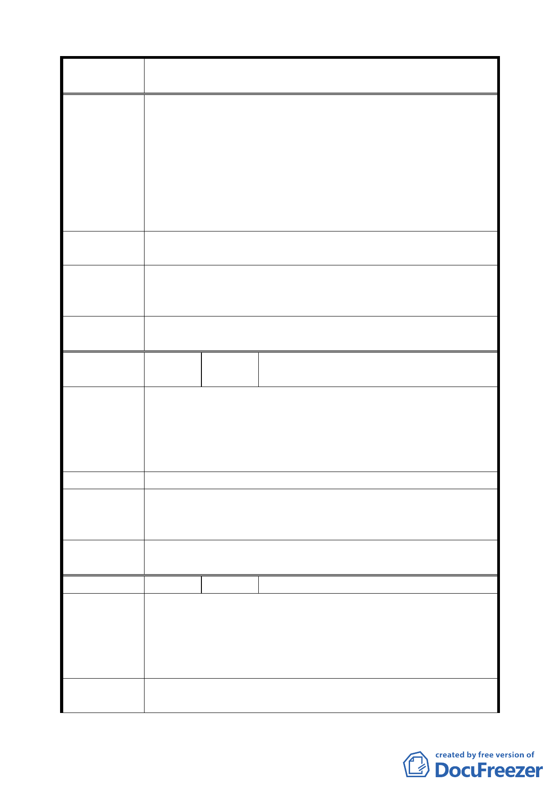

案 名 臺北市文山區都市計畫通盤檢討（主要計畫）案
電及電報等重要戰情通信任務；憲兵主要任務為戍守大
臺北地區治安等重要工作，營區有重要軍事價值、必要
性及不可替代性。
二、為配合教育局興建辛亥國高中，軍方前已同意由市府提
供土地及代建拆後即可搬遷，惟經多年協商至今均未提
供適當地點興建及搬遷；另因土地使用分區為學校用
地，致營區設施老舊無法辦理整修、整建等工程，影響
任務正常運作及造成官兵生活品質低落。
建議辦法
建議將土地由學校用地（國中、高中）變更為機關用地以符
實需。
專案小組
審 查 結 論 因本陳情意見涉及軍方土地，移請市府另案專案處理。
（94.7.7）
委員會議
決議
依專案小組審查結論辦理。
編
號 １５
陳情人
國防部軍備局工程營產中心北部地區營
產管理處（09430095400）
建議位置：興隆段三小段 221 地號土地。
陳情理由
（興隆）
建議理由：
上開土地為陸軍總司令部管有，原土地使用分區為住宅區，
目前現況為人行紅磚道使用，為符實際，建議變更為道路用
地後，由臺北市政府辦理後續撥用作業。
建 議 辦 法 建議將土地由住宅區變更為道路用地以符實需。
專案小組
審 查 結 論 本案陳情位置已變更為機關用地，移請市府辦理撥用。
（94.7.7）
委員會議
決議
依專案小組審查結論辦理。
編 號 １６ 陳情人 丁增義（09430109600）
建議位置：文山區福興路。
陳情理由
（興隆）
建議理由：
據報載中和市（台北縣）因都市發展，已完全將其市內公墓
遷走，為何首都經費都計能力較強，反而沒辦法？
造福周圍近 4000 戶市民。
建議辦法
一、儘速遷移福興路底景美 11 號公墓，並作整體規劃、節省
經費。
一一